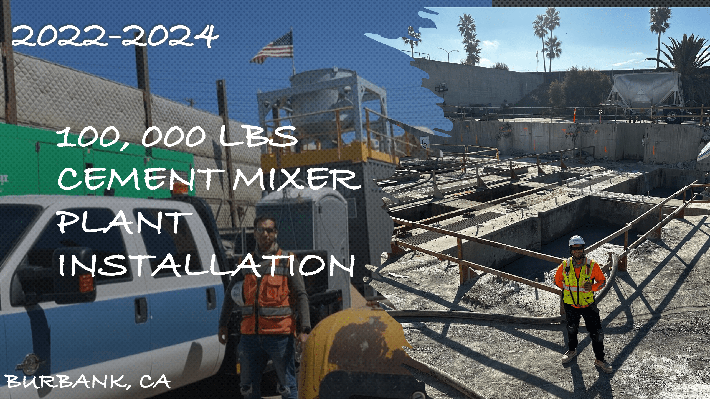
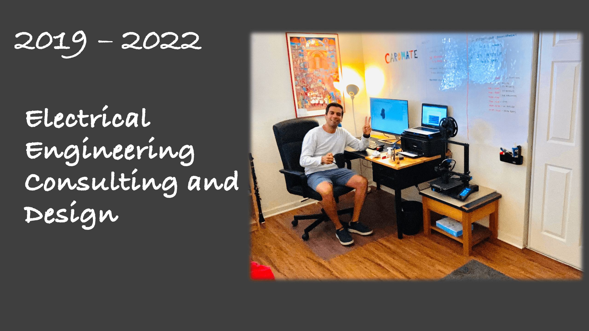
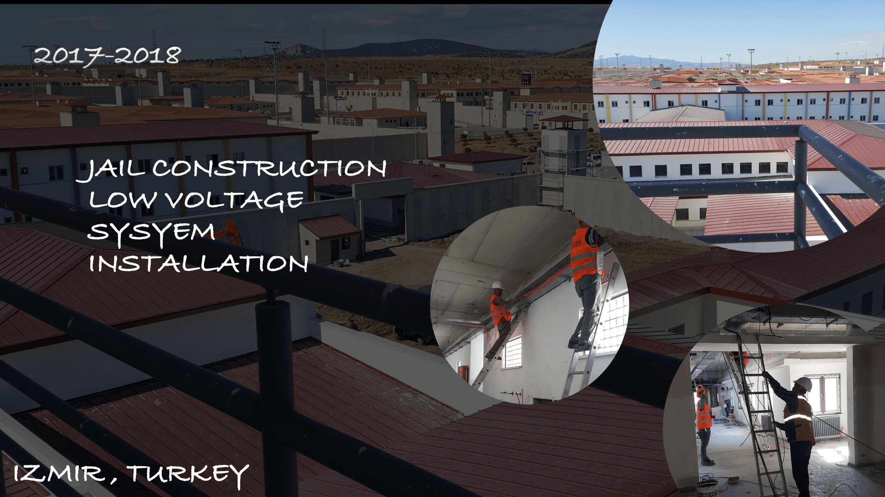
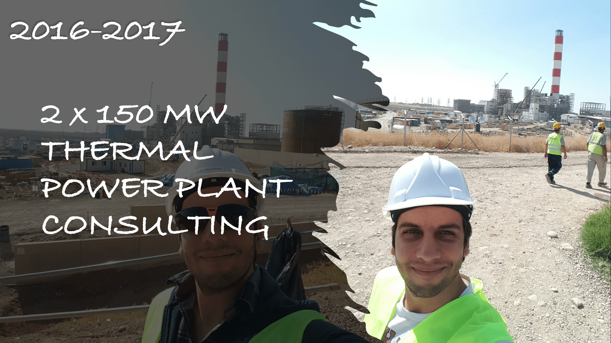
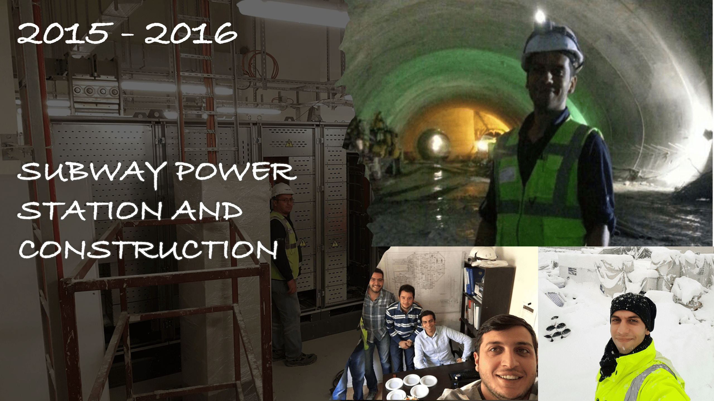
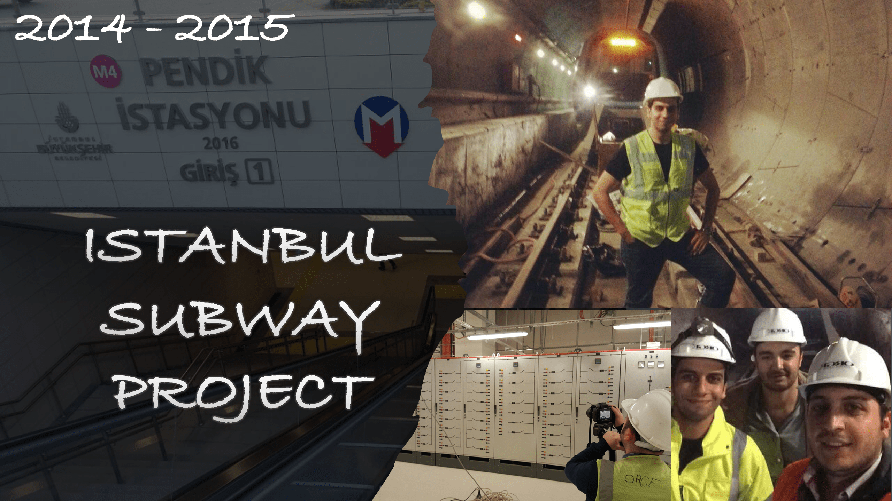
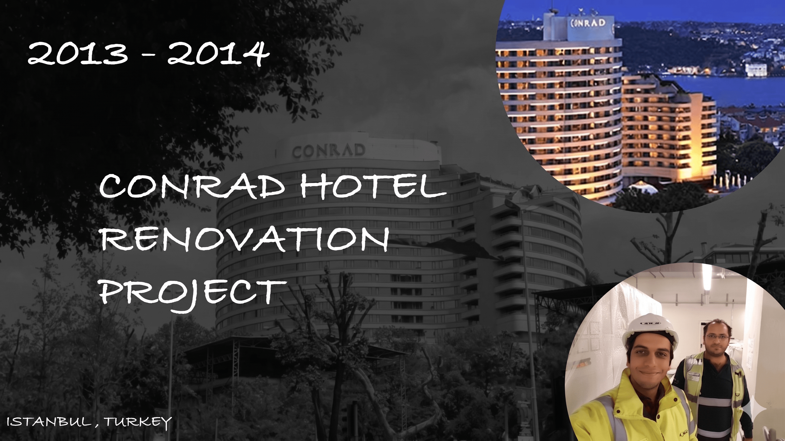

Project Portfolio
Engineering Oversight & Technical Management
Our Expertise in Action
ProVolt Engineering provides specialized consulting and management for complex electrical infrastructure. Below are selected examples of technical oversight and project administration projects from our professional history.

Industrial Plant Infrastructure (2022 - 2024)
Burbank, CA: Provided technical oversight and engineering management for the installation of a 100,000 lbs cement mixer plant. Focused on infrastructure readiness and electrical systems integration for heavy industrial use.

Electrical Engineering Consulting & Design (2019 - 2022)
Specialized in multidisciplinary electrical design and technical consulting. Leveraged advanced engineering principles to deliver project-specific solutions for complex infrastructure challenges.

Institutional Systems Management (2017 - 2018)
Izmir, Turkey: Managed technical aspects of low voltage system architecture for large-scale institutional construction. Directed oversight of systems installation to ensure security and operational compliance.

Thermal Power Plant Consulting (2016 - 2017)
Technical consulting for dual 150 MW thermal power plant operations. Provided engineering analysis and strategic management oversight for critical power generation infrastructure.

Transit Power Station Construction (2015 - 2016)
Administered technical management for subway power station development. Focused on high-capacity electrical distribution systems within complex underground transit environments.

Mass Transit Infrastructure Oversight (2014 - 2015)
Istanbul Subway Project: Engineering management for large-scale transit infrastructure. Ensured technical specifications and safety standards were met across critical power distribution networks.

Commercial Infrastructure Renovation (2013 - 2014)
Istanbul, Turkey: Directed technical project management for the Conrad Hotel renovation. Oversaw complex electrical system updates and infrastructure modernization for high-tier commercial hospitality.